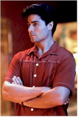

Rafael is the fish out of water, a stranger in a strange land of Lone Star beer and big cities. The trepidation he exudes upon his arrival in Texas is softened by his acceptance by his new family, particularly those that stock the Excelsior Dance Studio, a nearly rundown workshop owned by Barnett but supported by regulars Bea Johnson (Joan Plowright), a beautifully aging Brit; dedicated blonde-haired dancer Patricia (Jane Krakowski, better known to you as Elaine Vassal on Ally McBeal); humorously self-important instructor Stefano (William Marquez); Jewel Lovejoy (Beth Grant), the power behind the throne; and Michael Michaels (Harry Groener), Ruby’s struggling partner.All are preparing for the 22nd World Open Championship, four weeks hence in Las Vegas. Some have their days, others don’t. Rafael, hired on as the handyman, is the new kid on the block, destined to be in the spotlight a month later. Against competition that has been preparing for this event for years. With Ruby paired off with her arrogant ex-partner and father of her young son. Believable? Not really, but the director whisks you along at a fairly quick pace that you hardly notice. Hey, the music works, the dancing’s exciting, and I get the feeling that the actors and the crew put a lot of heart into this little picture.
No, this is not destined for blockbuster status as it opens on a moderate 1,500 screens against Wesley Snipes (2,200 prints of Blade), 1,800 copies of Dead Man on Campus, and more than 2,800 issues of Wrongfully Accused. But other than last week’s How Stella Got Her Groove Back, this is the only new love story out there and I presume Sony Pictures is gearing it’s campaign toward the romantically inclined. That’s not to say that this film can’t find it’s audience. I wish it well and hope that some of you enjoy it more than I did. We critics tend to hold films up to a microscope while you viewers enjoy the distance. And it’s a heck of a lot better than some of the other crap out there. This is a adequately enjoyable date flick, a lesser semi-precious gem.